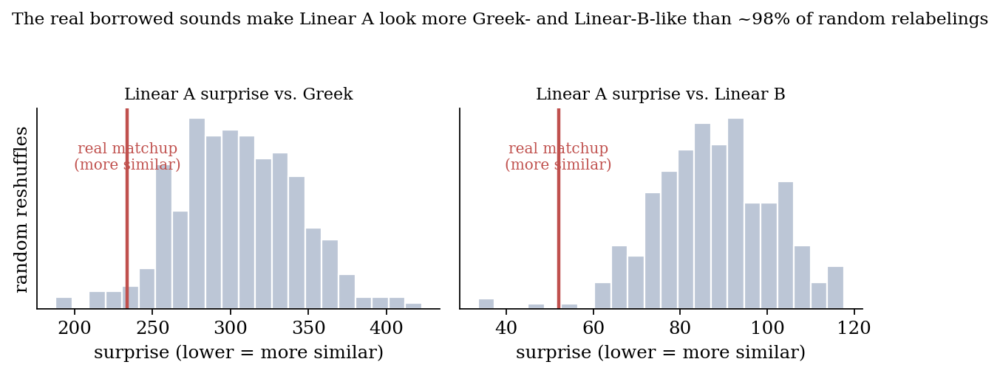

Independent research · June 2026
Linear A
Linear A is a 3,500 year old script from Minoan Crete that nobody can read. Computer studies keep naming its language family with confidence, and keep contradicting each other. I showed why, and that the honest answer, for now, is that we can't tell.

The puzzle
Linear B, a later script that shares many of Linear A's signs, was deciphered in 1952 as early Greek. Borrowing its sound values, we can read Linear A aloud, but the words belong to no known language. Computational studies have linked it to Semitic, to Anatolian, and in one paper to five unrelated families at once. When answers are that scattered, the method is the problem, not just the data.
Three ways a tiny corpus can fool you
- Different scripts. The same word looks unrelated when written two ways: Greek khrusós (gold) is ku ru so in Linear B. My safeguard converts every language into the same simple syllable spelling first.
- Unequal amounts of text. A model trained on lots of text is a strict judge and one trained on little is a lenient one, so their scores aren't comparable. I used size controlled scores with error bars.
- Borrowed sounds. Reading Linear A with Linear B's sounds may plant a resemblance to Greek. I measured that bias for the first time by reshuffling the sounds 300 times.
What I found
- The method passes a known test. It correctly recognises Linear B and the Greek alphabet as the same language (a surprise ratio of just 1.14).
- Linear A is not Greek. It resembles Linear B's script but not the Greek language. A real Greek dialect would match both.
- The borrowed sound bias is real. The actual sound values make Linear A look more Greek than about 98% of random reshuffles, and the main result survives it.
- A fake answer, taken apart. Without the safeguards, comparing against ten languages produces a confident "90% Semitic" verdict that three diagnostics expose as an artifact.
- Five different methods agree. Word shape typology, Bayesian odds with a "none of these" option, trade word borrowing, sister script triangulation and sign genealogy all return the same verdict: undetermined.


The takeaway
I'm not decoding Linear A. The contribution is a checklist for anyone attempting it, or any other unread script: test the method on a known answer, put every language in the same spelling, use fair size controlled scores with error bars, and measure the borrowed sound bias. With those in place, a confident answer has to earn it.
Built with
- Python
- NumPy
- n gram language models
- Bootstrap error bars
- Permutation tests
- Universal Dependencies treebanks
- WALS
- LaTeX